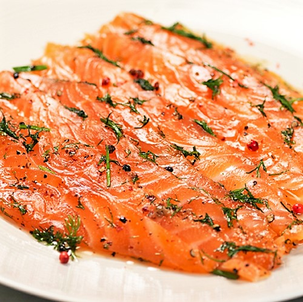
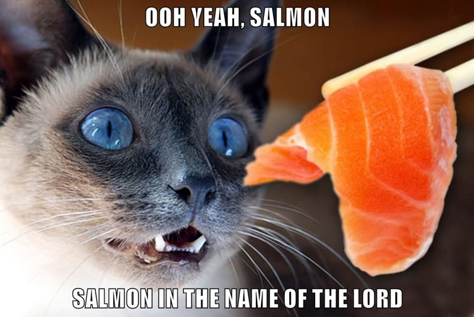

Scandanavian Gravad Lax

Classic Swedish style pickeld salmon. A dish that can be eaten year round and has endless varieties.
A small history lesson
Gravlax or graved salmon is a Nordic dish consisting of salmon that is cured using a mix of salt and sugar, and either dill or sprucetwigs placed on top, and may occasionally be cold-smoked afterwards. Gravlax is usually served as an appetizer, sliced thinly and accompanied by hovmästarsås (literally "maitre d'hôtel sauce", also known in Sweden as gravlaxsås, in Norway as sennepssaus, literally “mustard sauce”, in Denmark as rævesovs, literally "fox sauce", and in Iceland as graflaxsósa), a dill and mustard sauce, either on bread or with boiled potatoes.
Ingredients
- 1 salmon side
- 150 g coarse salt
- 150 g sugar
- 3 tbsp crushed coriander seeds
- 2 tbsp crushed red pepper corn
- 1 tbsp black pepper corn
- 2 oz fresh dill
- 2 oz fresh parsley
- 2 oz fresh chives
- 2 oz slices of lemon
- 1 lemon
Instructions
- Wash the side of salmon and make sure all the bones are out.
- Mix salt, sugar, coriander, red pepper and black pepper well.
- Dry side side of salmon and spread the salt mix over the meat side. Divide the slices of lemon on the salmon.
- Wrap the salmon in cling film when fully covered. Store in the fridge overnight with some weoght on it.
- The day after, unpack the salmon and rinse the salt of with cold water.Dry the salmon.
- Chop all the green herbs and mix them.
- Start by zesting the lemon on the meat side of the salmon.
- Divide the green herbs on the meat side of the salmon.
- Wrap the salmon in cling foil again and store in a fridge overnight.
- Unpack you salmon, and start by cutting the meat of the skin.
- The salmon is now ready to be sliced and served.
